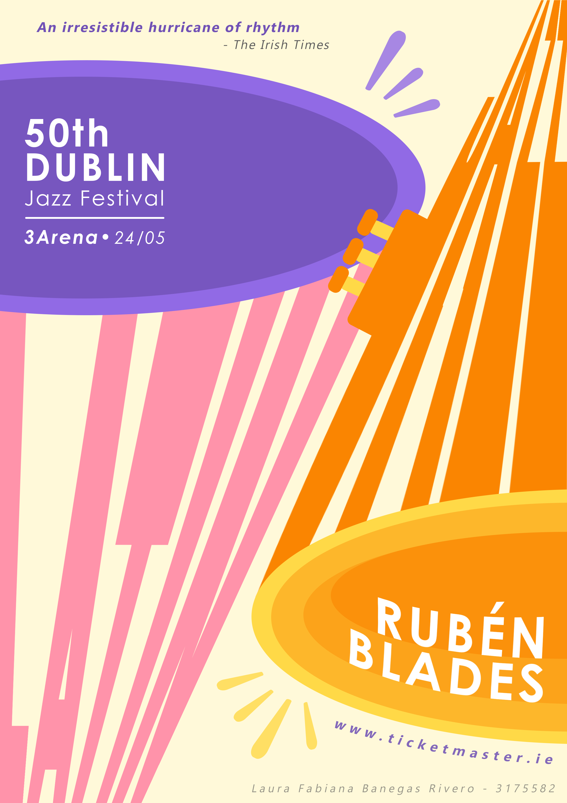
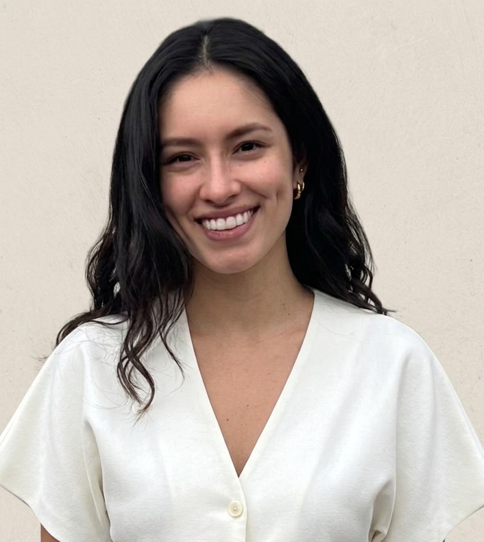
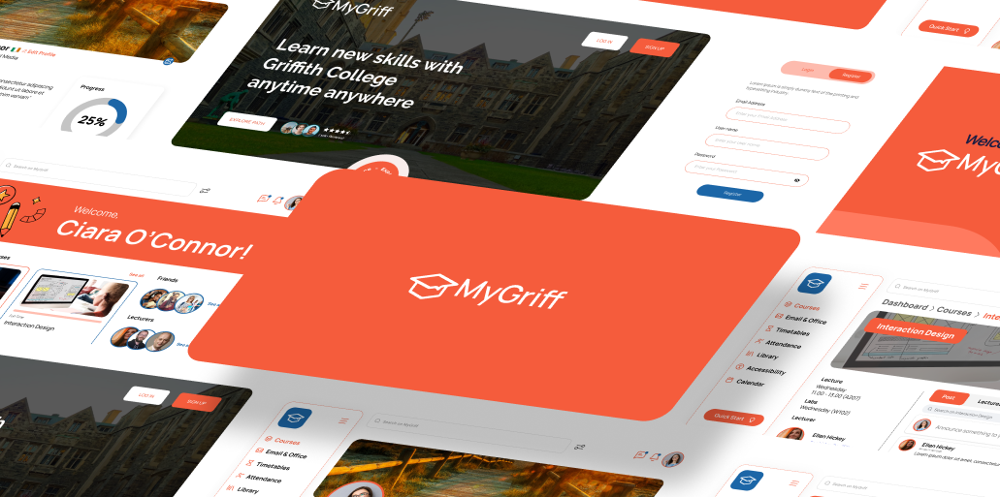
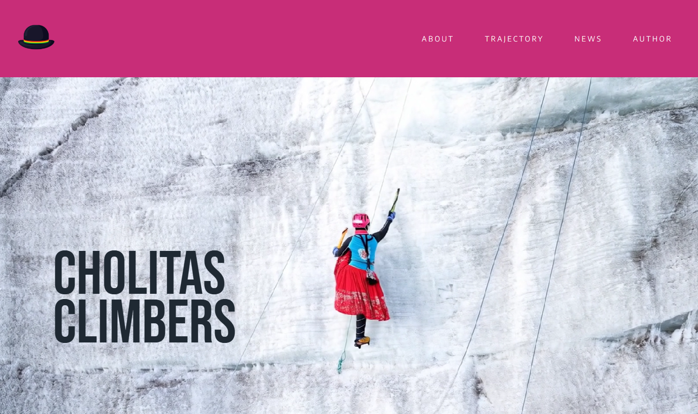
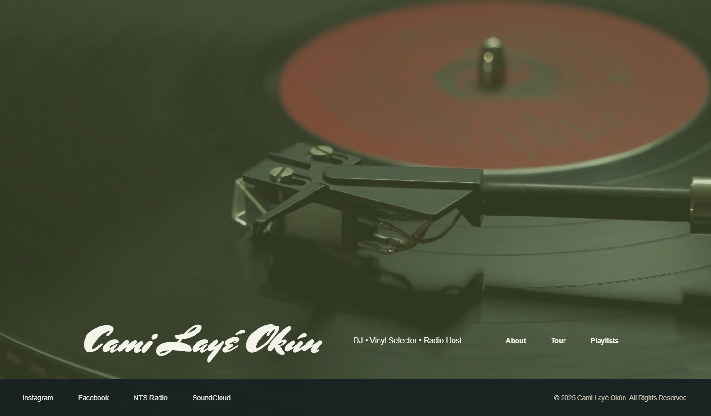

Music event poster
A project using typography, hierarchy and colour systems to express the vibrancy of Latin Jazz genre.

Creative Portfolio · 2026
My journey began in marketing and branding, where I discovered a passion for customer service, this synergy plus my curiosity for interactive media led me to Product design and UX research.
I focus my work and design systems on human-first solutions: genuine client empathy, resonant storytelling, and strong brand consistency.
Explore below

UX/UI · Learning platform
Redesigned Griffith College's current platform into MyGriff, a unified Virtual Learning Environment addressing key student pain points identified through surveys, interviews, and competitive analysis.
A goal-directed design project, gamification and wellness integration.
Web · Storytelling & culture
A hero website celebrating Bolivia's Cholita Climbers, a group of Indigenous Aymara women who summit Andean giants like Huayna Potosí, Illimani, and Aconcagua in their traditional atires, polleras and bowler hats.
A project about visibility, strength, and identity.

Web · Artist site
CUBAN DJ, VYNIL SELECTOR & RADIO HOST
A hero portfolio website built with Astro framework on Netlify, delivering lightning-fast performance with zero JavaScript by default and seamless partial hydration for interactive elements.

Visual communication · Posters
Two visual communication projects developed from concept ideation to final poster outcome, each translating atmosphere, narrative and audience into a clear visual language.

A project using typography, hierarchy and colour systems to express the vibrancy of Latin Jazz genre.

A project using negative space, hierarchy and subtle colour to evoke suspense and narrative tension
Email:
fabianabanegasrivero@gmail.com
LinkedIn:
linkedin.com/in/fabianabr
Based in Dublin · originally from Bolivia